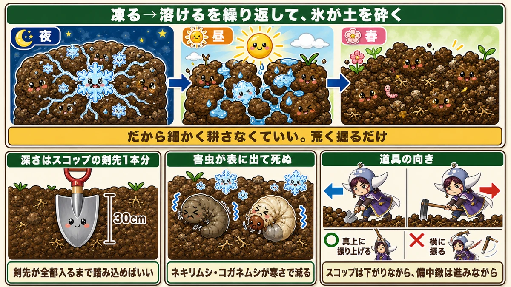
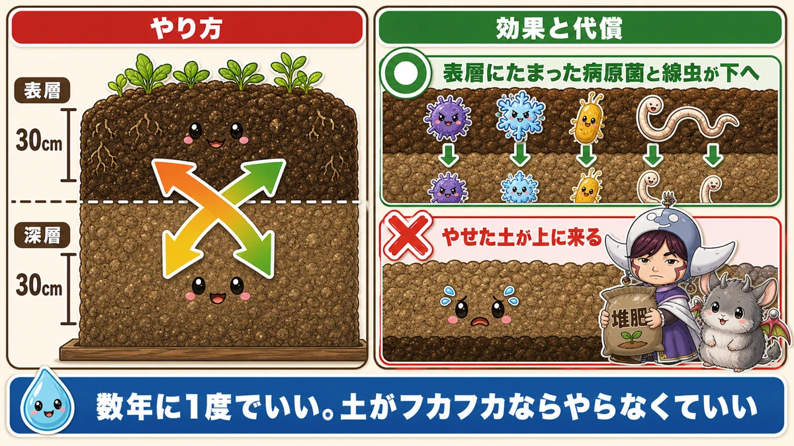
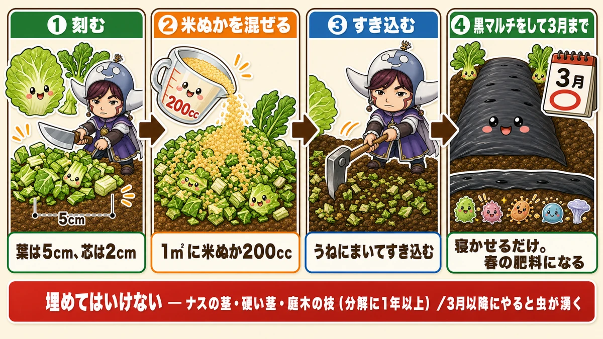
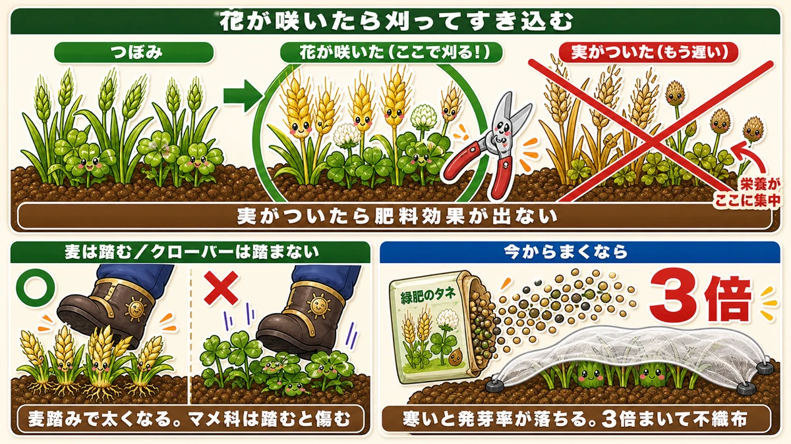
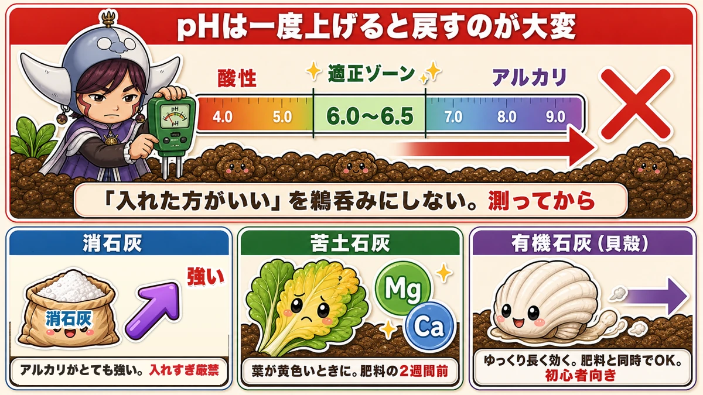
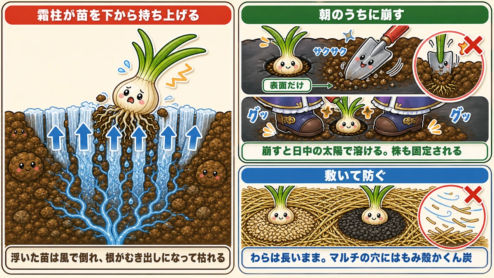

Winter is for digging and leaving ❄️ Six jobs that make spring easy

🗨️ "Is there anything to do in the garden in winter?"
🗨️ "I'll just dig it over in spring."
🗨️ "My onion plants were lying on their sides and I don't know why."
Hello, I'm Eiko. Eight years of growing vegetables organically and without pesticides, and a teaching licence in science.
The point of this article, up front:
Winter isn't the empty season. It's the preparation season.
There's little growing, no watering and no feeding, so it looks like nothing. In fact it's the time of year when you have the most room to move — and whether you used it shows up very clearly in spring. My own estimate: about a third of spring's work can be pulled forward into winter.
Better still, nearly all of it is do it once and leave it. One or two cold afternoons, and then the soil and the microbes get on with it ☺️
Six jobs, in order.
① Rough winter digging — one spade's depth, and that's all
If I could only do one thing in winter, this would be it. And it's startlingly simple:
Turn the soil over roughly, 20–30 cm (8–12 in) deep. That's it.

What this diagram says （図解の文字）
- Freeze, thaw, repeat — and the ice breaks the soil up （night / day / spring）
- So there's no need to cultivate finely. Just dig it roughly
- Depth is one spade blade — 30 cm. Push it in until the whole blade is buried
- Pests come to the surface and die — cutworms and chafer grubs are reduced by the cold
- Which way the tools go — raise it straight up, never swing it sideways ／ a spade works backwards, a fork works forwards
"Roughly" is the instruction
There is no need to break the clods down. Leave them lumpy, turned over, and walk away.
Because winter does the next part. The turned soil freezes at night and thaws by day, over and over. The clods break apart from the inside, and by spring the bed is crumbly. You don't have to do the breaking.
The spade is its own ruler
"30 cm" is hard to judge. Usefully, a spade blade is about 30 cm long. Tread it in until the whole blade is buried and you're there.
And it kills overwintering pests
The second benefit: pests that were overwintering in the soil get turned up onto the surface, where the cold kills them.
This is what reduces cutworms — the ones that chew through a transplant at ground level overnight — and chafer grubs. Fewer of those plants that get felled the week you put them in.
Rough digging can be done every year if you have the time. The colder the spell, the better it works.
② Double digging — a big job, once every few years
This gets confused with the job above. They look similar and the purpose is completely different.
Rough digging loosens the surface. Double digging swaps the layers.

What this diagram says （図解の文字）
- How to do it ／ the effect and the cost
- Top layer 30 cm ／ lower layer 30 cm
- Pathogens and nematodes that built up at the surface go down
- Poorer soil comes up to the top → compost
- Once every few years is enough. If the soil is already crumbly, don't bother
Why swap them
Grow in the same ground year after year and two things happen:
- a hard pan forms lower down and roots can't get through it
- soil pathogens and nematodes accumulate near the surface
That second one is part of what "replant disease" actually is. Grow the same crop in the same place and the organisms that specialise in it build up in the top layer.
Swap top and bottom, and those organisms end up deep down where their concentration is much lower.
How to do it in a home garden
Commercial growers use a digger and go down a metre. A spade is plenty for a bed:
- Dig out the top 30 cm and set it aside
- Dig out the 30 cm beneath it and set that aside separately
- Take the top 30 cm of the next section and drop it into the deep hole you just made
- Dig the deep layer of that section and put it where its topsoil was
- Work along the bed, and fill the last hole with the two piles you started with
Top goes down, bottom comes up, sliding along the bed.
Know the cost before you start
The poorer soil ends up on top.
Which is obvious once said — you've buried the layer that years of work made fertile. So when you plant after double digging, add noticeably more compost and feed than usual. Skip that and growth drops off sharply for that one season.
And: if your soil is already in good heart, don't do it. Double digging is for people fighting persistent soil disease or a pan they can't get roots through. Once every few years, at most.
③ Bury the leaves you'd throw away — a winter-only trick
This is the job that has felt most like getting something for nothing.
Outer cabbage leaves, damaged mooli tops, broccoli leaves. Winter produces heaps of it, and it normally goes on the compost or in the bin.
Put it back in the soil and it becomes next spring's fertiliser.

What this diagram says （図解の文字）
- Returning crop waste to the soil
- ① Chop — leaves to 5 cm, stalks to 2 cm
- ② Mix in rice bran — 200 ml per square metre
- ③ Fork it into the bed
- ④ Black plastic over it until spring — just leave it. It becomes spring's fertiliser
- Don't bury: aubergine stems, thick hard stalks, woody prunings (over a year to break down)
- Do this after early spring and you will get maggots
Four steps
- Chop the leaves to about 5 cm (hard midribs finer, about 2 cm)
- Mix in rice bran, about 200 ml per square metre
- Spread it on the bed and fork it in
- Form the bed and cover with black plastic
Then leave it until spring.
The black cover keeps it slightly warmer underneath, so as soon as the weather turns the microbes go to work and the leaves break down into the soil. Plant there later in spring and you may well not need to feed at all.
"Won't it attract maggots?" — not in winter
No. In the depths of winter, nothing hatches.
Which is exactly why this is a winter-only job. Do the same thing once the weather warms and you genuinely will have a problem. The cold is what makes it work.
What not to bury
- Aubergine stems — these are effectively wood and take far too long
- Thick, hardened brassica stalks
- Shrub prunings, rosemary and the like — sometimes over a year
Soft leaves only and you won't go wrong.
④ Sow a green manure on the empty beds
If beds are standing empty over winter, a green manure is worth considering — a crop grown not to eat but to feed the soil. Cereals (grasses) and clover (legumes) are the two standards.
What it does
- keeps soil microbes alive through winter, which bare soil does not
- legumes fix nitrogen from the air via root-nodule bacteria and leave it behind
- improves soil carrying nematodes and pests
- cut and dug in come spring, it is the soil preparation

What this diagram says （図解の文字）
- Cut it when it flowers and dig it in
- Bud → in flower (cut here!) → seed set (too late) — the nutrients all concentrate in the seed
- Once it seeds there's no fertiliser value left
- Tread cereals ／ don't tread clover — treading thickens a cereal; legumes are damaged by it
- Sowing late: three times the seed, because germination drops in the cold, and fleece over it
The one thing to get right
Cut it at flowering and dig it in.
Once seed has set, all the nutrients have gone into the seed, and returning it to the soil does almost nothing. "I'll let it grow a bit longer" is the mistake.
With a cereal there's an alternative: cut off just the ears as they emerge. That extends the growing period and keeps green leaf going until late spring planting.
If you're sowing it late
- Sow about three times as thickly — germination falls badly in the cold
- Lay old fleece or insect netting over it to help it through
With cereals, tread the seedlings once they're a few inches up. Treading thickens the stems and makes them branch from the base. It's a good job to do with children.
Clover is the opposite — don't tread it, it just gets damaged. Same job, opposite instruction.
⑤ Lime — measure before you add any
The most misunderstood part of winter soil work. "Lime improves soil" gets repeated, and people add it without checking. Go carefully here.
Why lime at all
- Calcium. Short of it, Chinese cabbage discolours in the heart and potatoes get dark internal spotting
- pH. Rain is slightly acidic, so soil drifts acid if left alone
Calcium has an interesting property: it barely moves around inside a plant. The plant can't shift it from where it has some to where it doesn't — it can only take up more from the soil. Which is why having it in the soil matters.

What this diagram says （図解の文字）
- Once you raise the pH, bringing it back is hard work
- acid ／ the right zone ／ alkaline — 4.0 / 5.0 / 6.0–6.5 / 7.0 / 8.0 / 9.0
- Don't take "you should add lime" on trust. Measure first
- Hydrated lime — strong. Very strongly alkaline; never overdo it
- Dolomitic lime — Mg + Ca. For yellowing leaves. Two weeks before feeding
- Organic lime (shell) — slow and long-lasting. Can go in with the feed. Good for beginners
Three kinds, three personalities
- Hydrated lime — burnt limestone slaked with water. Strongly alkaline, strong enough to be used as a disinfectant. Powerful, and dangerous to overdo
- Dolomitic lime — rich in magnesium as well as calcium. Suits yellowing leaves and other signs of disorder
- Organic lime (crushed oyster or other shell) — slow and long-acting, mild enough not to burn roots, so you can feed or plant straight after applying it
For a home garden I'd start with organic lime. But don't read "slow-acting" as "add plenty" — it works properly, just later.
The rule that matters
Raising pH is easy. Bringing it back down is very hard.
So measure before you add. A cheap meter from a garden centre is entirely good enough.
Most vegetables are happy around 6.0–6.5. Exceptions: peas and spinach prefer it slightly alkaline; potatoes prefer it slightly acid.
Applying it
- About 100 ml per square metre is plenty
- Hydrated and dolomitic lime go in about two weeks before any feed — together with a nitrogen fertiliser they react and give off ammonia
- Organic lime is slow, so it can go in at the same time as feed
- Fork it in well, and water if the soil is dry — without water it doesn't break down
Worth knowing: poultry manure also pushes soil towards alkaline and supplies calcium and magnesium. If you use it routinely you're unlikely to see a serious deficiency.
⑥ Stop frost heave lifting your plants out
Through the cold months you'll get frost — and the trouble isn't the frost itself, it's needle ice.

What this diagram says （図解の文字）
- Dealing with frost heave
- Needle ice lifts the plant from below
- A lifted plant blows over, the roots are exposed, and it dies
- Break it in the morning — crumble just the surface; broken up, the day's sun melts it and the plant is bedded in again
- Or lay something down — straw in full lengths; rice husk or husk charcoal in the holes of plastic mulch
Why plants get lifted
Needle ice pushes the soil at the base of the plant upward. It forms especially readily in the planting holes of mulch, and you come out one morning to find the plants standing proud of the soil. A lifted plant blows over in the slightest wind, or has its roots exposed and dies.
Finding onions on their sides and having no idea why is a very common experience. This is the culprit.
Fix 1 — break it, in the morning
- Do it in the morning. Broken up, the day's sun melts it away
- With mulch, put a trowel into the hole and crumble just the surface. Go deep and you damage roots
- With a lot of plants, put a foot either side of each one and press down. It crushes the ice and beds the plant back in at the same time
Check the forecast, and go out after a hard night. It makes a real difference to how many onions survive.
Fix 2 — cover the ground so it can't form
- Straw. Lay it in full lengths along the bed rather than chopped — it blows away less
- With mulch, put rice husk or husk charcoal into the holes
- With small plants or anything not yet rooted in, cover with fleece or netting
Anything already a decent size — overwintering peas, for instance — doesn't need fussing over.
Three things not to do in winter
① Feed and sow straight away
Fertiliser works after it has broken down in the soil, which takes over two weeks — and in deep winter, decomposition is as slow as growth is. Sow next to feed that hasn't finished breaking down and you can get damage.
So in winter: sow into unfed soil and top-dress later once you see how it's growing. That's the reverse of the spring and summer approach.
② Take the netting off too early
When leaves start pressing up into the mesh it's tempting to remove it. Insects are still active. Loosen it where it's catching, or add a hoop to gain height.
③ Strip the lower leaves off a heading plant
Lower leaves of cabbage and Chinese cabbage lying on the soil look untidy. While the plant is still growing, those outer leaves are doing the work of making the head. Remove them and it stops hearting.
Only take leaves that have gone completely yellow.
And things to get picked before winter
- Mooli — goes pithy over winter and loses flavour. Lift it before the hard cold
- Head lettuce — once it's firm, cut it; left too long you get rot and aphids
- Taro and sweet potato — before the first frost. Frosted tubers spoil
The science: why freezing makes soil soft 🔬
Science lesson. This one makes rough digging genuinely interesting.
Water has an odd property: it expands by about 9% when it freezes.
Almost everything else contracts as it cools. Water is the exception — which is also why ice floats.
A dug clod has water soaking through it. At night that water freezes and expands, pushing the clod apart from the inside and cracking it. By day it thaws, and the space it made stays.
Repeat every night. Dozens of times across a winter.
So rough digging is really handing the soil over to a natural cultivator. You aren't breaking the clods — the ice is. Which is exactly why "just dig it roughly" is the whole instruction.
The same mechanism cracks roads in winter. The same thing is happening in your beds and in the tarmac outside.
And needle ice is water behaving characteristically too: water is drawn up through fine pores to the surface, freezes there into a column, and more water keeps arriving from below, so the column keeps growing and lifts the soil. That's why the plants rise.
With children: freeze a bottle of water and watch it bulge, sometimes deforming the bottle. "That force is what's breaking up the soil" makes an invisible winter job suddenly real 😊
To sum up
- ✅ Rough-dig 20–30 cm and leave it. One spade blade. The ice does the crumbling
- ✅ Double dig once every few years — and add extra compost and feed afterwards, because poorer soil is now on top
- ✅ Chop waste leaves to 5 cm, mix with rice bran, dig in, cover with black plastic until spring — winter is the only season this is safe
- ✅ Compost collected leaves properly before using them
- ✅ Green manure: cut at flowering. Once it seeds it's too late
- ✅ Tread cereals; never tread clover
- ✅ Measure pH before adding lime. If unsure, organic lime, 100 ml per square metre
- ✅ Break needle ice in the morning, or press the plant back in with a foot either side
- ✅ Straw, rice husk or husk charcoal stops it forming
- ✅ Three don'ts: feeding then sowing / removing netting early / stripping lower leaves off heading plants
You don't have to do all of it. Take one empty bed, turn it over roughly with a spade, and leave it alone. The way the soil feels in spring will be different. Winter work always comes back to you ❄️
Thank you for reading!